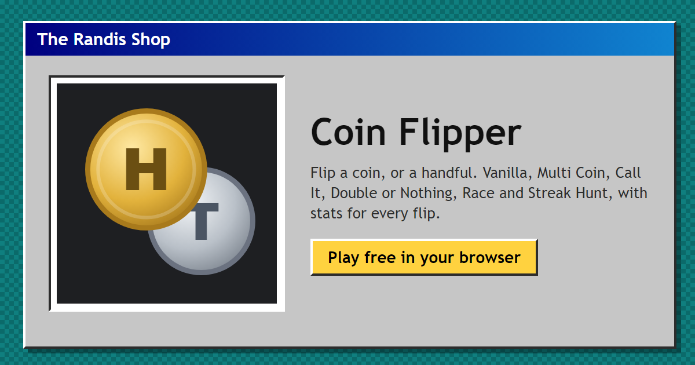

Coin Flipper

Flip a coin, or a handful. Vanilla, Multi Coin, Call It, Double or Nothing, Race and Streak Hunt, with stats for every flip.
Made with Randis UDS, a free desktop app that builds the tools you describe.

Flip a coin, or a handful. Vanilla, Multi Coin, Call It, Double or Nothing, Race and Streak Hunt, with stats for every flip.
Made with Randis UDS, a free desktop app that builds the tools you describe.